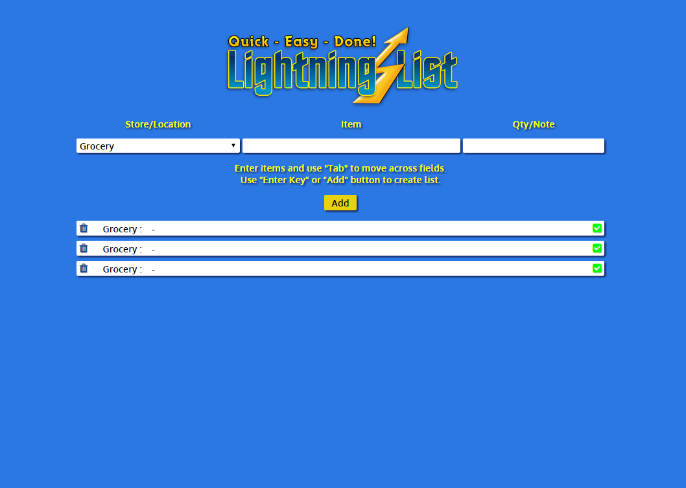

Hello and welcome to my portfolio site. I am learning Front End Web Development through Thinkful.
Hello and welcome to my portfolio site. I am learning Front End Web Development through Thinkful.
Over the last 15 years, I have worked in the customer service and systems training field. I really enjoyed learning how the user experience is affected by the design and programming choices made by the developers. It was time for a change! With a diverse history in Graphic Design, Technical Service, Client and Employee Training development, I decided a career in Web Development would be a great choice. If you want to learn more, check out my About Me page.
Outdoors-A-More
html / css / design / javaScript / ajax / api
This project was built from scratch, including concept, content and logo. The user puts in their search parameters and when they submit the search, the sight will make an Ajax call to a remote Trail API to get all of the possible data. Then that data is filtered to show the user their final results, showing a list of outdoor activities in a specific area. Learning to decipher the remote API took some time and research for sure.


Quiz Game
html / css / design / javaScript
This project was built from scratch, including concept, content and logo. Javascript is used to track the users progress through the quiz. When the user submits their answers, they are given a quick results as they take the quiz. I am really proud of the look and feel of this project.
Shopping List
html / css / jquery
This is another project to strengthen my jQuery skills and apply them in a more complex site. It was also very challenging to learn all of the methods that go into a small app like this. Using my graphic skills, I did have fun coming up with the name and designing the logo.

Angular MadLibs Game
html / css / angularJS
The goal of this project is to apply AngularJS to achieve the games functionality. I had to match the requested design specs that were given to me. The user puts key words into the form and submits them to reveal a funny story using their keywords. Angular is a change in philosophy from regular javascript, but I really enjoyed this learning process. I have only scratched the surface with what Angular JS is capable of.

Hot or Cold Guessing Game
html / css / javaScript
Javascript is used mainly in this project. I was given the HTML and CSS already completed and then I added the functionality to the game. Learning about functions and conditional logic in javascript was a real challenge. Now it's really awesome to watch friends and family play the game and enjoy the experience.

Web Site Clone
html / css / layout
This was my first project. Clone the look and feel of an existing site. It was challenging to create an exact match of the original, yet simple enough to not get overwhelmed.

jQuery Streetfighter Demo
html / css / jquery
The purpose of this site was to learn how a site can listen for and react to user input, such as a mouse click or pressing a keyboard event. Animation is fun!